December 2004
Wysiwyg Editor
Introduction
The editor is a very simple wysiwyg editor, capable of handling HTML*, RTF, RVF and TXT files. The concept is specially designed to make a number of (reasonable looking) documents, all having an equal style, in a very easy way. To give an impression of the possibilities, this documentation and this website is completly made by the Wysiwyg Editor in JALcc.
Therefor, instead of storing styles in each document, the styles are part of JALcc itself, and still can be controlled fully by the user. This may sound a bit weird, but if you're familiar with html-pages build with Cascade-stylesheets, you'll see the resemblance. Only the styleset is stored in the document. JALcc can store a number of different stylesets (definied by the user). By changing a styleset, all documents having that styleset, will change their appearance.
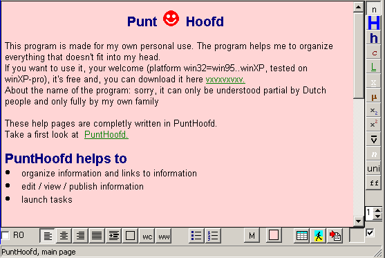
On the right of the editor window, are the textstyles of styleset 1 (spin button at the right-bottom corner).
Below the editor window are the paragraph-styles, list-styles and some insertion tools and the selection of the spell-checker (not shown in the picture above).
Besides these special buttons, the following control mechanism are available
Drag & Drop
For dropping items on a document, the following rules apply:
It may not always be clear what type of drop is used, so here the most common types of drops:
Clipboard Dropping
File / Link Dropping
HTML files
RTF formatting
Mouse Actions
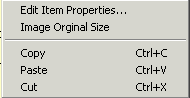Right Mouse Menu
DoubleClick: selects an item and displays "Edit Item Properties Dialog". Not sure this a good thing ??
Special Keyboard Keys
In general all the special keys that modern editors have, are available.
ctrl-S = save the file
ctrl-tab = tab
ctrl_Enter = insert pagebreak ??
This part of the program may not be completly.
Standard Clipboard combinations (both standard like Ctrl+C and alternative
like Ctrl+Ins), undo (Ctrl+Z or Alt+Backspace), redo (Shift+Ctrl+Z or
Shift+Alt+Backspace), new line inside the paragraph (Shift+Enter - if
allowed).
Delete word left (Ctrl+Backspace), go to the beginning (Ctrl+Home), to the
end (Ctrl+End).
In ReadOnly: tab (or ctrl+tab) goes to the next hyperlink, Enter executes
the active hyperlink.
When resizing table columns: press Ctrl to resize only column to the left
(by default both columns to the left and to the right are resized)
When resizing images: press Escape to cancel resize. Hold Ctrl for
symmetrical resize. Hold Shift for proportional resize (resizing is always
proportional when resizing by corner handles).
When dragging in the same editor: press Escape to cancel. Press Ctrl to copy
intead of move (when copying to a foreign application, that application
controls a dragging mode itself, but generally Ctrl means copy).
Main Program Menu
EDIT: has most commonly used actions, often also available by other means
TABLE: special actions on tables (merge/split/add/remove cells/rows/columns)
Style Buttons (general)
The active stylebuttons, shows the actual style of the editor at the place of the caret or of the selection.
By clicking on a style the actual style, at the place of the caret or the selection will be changed.
With a RightMouse click on a style button, you can change the style definition of the selected style.
Styles can also be changed through the main-menu (File / Styles...).
Some textstyles have special meaning, like "jump or link style", see for more information "Styles"
StyleSet
Definies the styleset for this document.
For HTML pages the styleset for all the html-files in the current path are set to the selected style.
Readonly
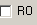 by checking this checkbox, the file becomes readonly and all style buttons will disappear.
If a document has been made readonly, it will stay readonly (also on subsequent opening), until the checkbox is cleared.
Align and Indent
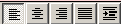 the indention can be set for each styleset.
Boxed, windows
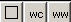 The first button draws a border around the selected (or new) paragraph.
The second and third button, allows to create a windows caption (wc) and a windows workspace (ww).
I'm not sure the latter 2 paragraph styles will be continiued.
Lists
The indention and styles of bullet and numerical liststyles can be definied for each styleset.
For the moment, just one level of lists is supported.
Background Color
this will let you define the page background color
Inserting Pictures
Inserting of pictures is supported for type GIF (also animated), ICO, BMP, JPEG images. EMF and WMF are not supported, because they can not be shown in Mozilla. Insertion can be done by
If you can avoid the first and second method (because there's only one image involved), AVOID THEM !!
The second and third method are much faster, because they know only 1 image is coming, while the other methods can expect (and thus have to iterate through) all possible items. You can easily try this by inserting a copy of the screen and then try to change the imported image by double-clicking, first try print-screen+ctrl-V then try the screen capture button.
With the capture button, it's possible to capture any part of the screen, to be inserted as a picture. Normally on starting a capture, JALcc will minimize itself, until the capture is completed. By checking the checkbox next to the capture button, it's also possible to capture parts of JALcc itself, because it won't be minimized. In case of HTML-documents, the picture will be stored in the same directory as the document, with a name <doc-name>_img<xxx>.gif, where <xxx> is a number starting at 1.
Scripts in html
Scripts in html files are separated from the normal html content and opened in a separate code editor.
After opening the html file in the wysiwyg editor, the scripts are replaced by special links:
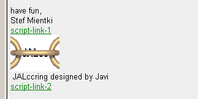
and at the same time the scripts are stored in a file with the same name, but with the extension ".script". At this moment the following script tags are supported:
<script ....> </script>
<?.... ?>
The script-file is automatically opened in a code-editor (associated with the extension ".script").
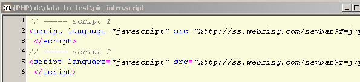
After editing the script, you must save the html file (either, by modifiying or by an explicit save (ctrl-S)). There's no need to save the script file after modifying, because it's saved automatically when the code-editor looses focus.
Links
Links also support the target item. The double quotes are not always necessary, but are always inserted every time the document is opened (because the double quotes can do no harm).
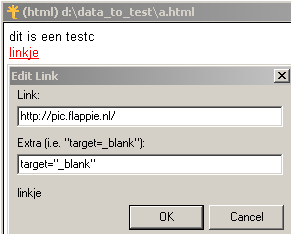
Spell-Checker
The editor can use spell-checkers from ISpell and MS. The MS spellcheckers doesn't seem to work on every operating system and not all MS spell-checker formats are recognized. So the advice is to install ISpell. There's another reason, M$ spell-checkers aren't available for free anymore.
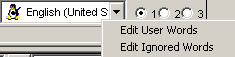
The right mouse menu from the spell-checker selection box, let's you add and ignore words. This is not yet well implemented (where to store this information, with the spell-checker ?, with each document ?)
The ISpell-checkers should be registered here (done by installing ISpell)
Registry.RootKey:= HKEY_LOCAL_MACHINE;
if Registry.OpenKey('\SOFTWARE\Microsoft\Windows\CurrentVersion\App Paths\ispell.exe', False)
The MS-checkers should be registered here (done by installing MS-office or other MS products)
Registry.RootKey:= HKEY_LOCAL_MACHINE;
if Registry.OpenKey('\SOFTWARE\Microsoft\Shared Tools\Proofing Tools\Spelling', False)
Image Manager
The image manager is a simple tool to get pictures (or parts of it) from a camera into your documents. This module is made for the following scenario: you shoot a whole bunch of pictures, want to select a few of them for your documentation, do some simple manipulations (like rotate / flip) and prepare the camera for next use, by deleting all the pictures from the camera.
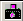
Basically the image manager is just a normal explorer (without the annoyances of ms-explorer) with some extra buttons and a fully configurable favorites list.
|
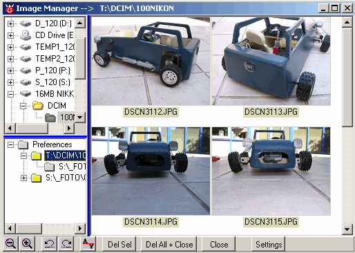 |
Through the right mouse menu in the preference list, you can add or remove items to/from the preference list.
Adding, adds the current path to the preferences. Right clicking on an icon, drops the path into the treebranch, right clicking on the label, inserts above the current item. |
|
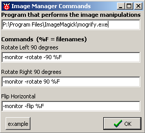 |
Image manipulation shold be done by the program of your own preference. I use ImageMagick, a great freeware package.
In ImageMagick the action are performed by the module Mogrify. Pressing on example, will show the commands I use. |
Insert Table
See for tables the special paragraph Editor, tables
Inserting Files
Inserts the contents of a file (including styles) into the place of the caret.
{kind=link}